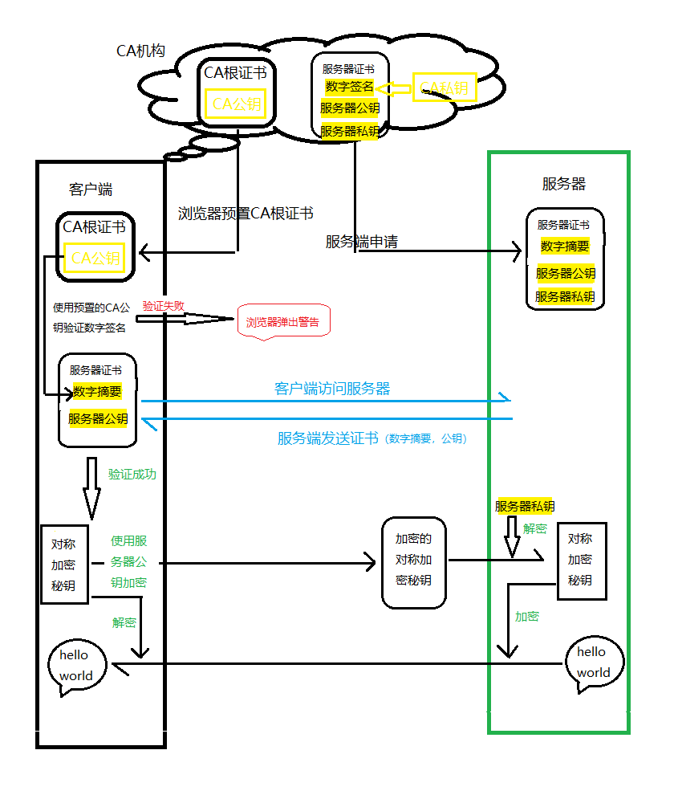

这里做个笔记，看了网上的一些资料后自己理解的https协议的工作原理。
先来说下对称加密和非对称加密，对称加密就是当在对信息进行加密和解密时使用的秘钥是同一个秘钥，对称加密的优点是效率高但是相对不安全；非对称加密秘钥分为公钥和私钥，我们可以使用私钥加密用公钥解密，当然也可以使用公钥加密使用私钥解密，非对称加密的优点就是要比对称加密安全，但是效率要低。
客户端与服务器之间的通讯是使用非对称加密和对称加密相结合的方式进行的，即先使用非对称加密的方式来协商对称加密的加密秘钥，然后再使用对称加密的方式来进行信息的传输。这样既保证了信息的安全性又解决了信息传输时解密信息所带来的效率问题。
为了保证在传递加密公钥的过程中不会别黑客劫持而导致信息被篡改，所有这里需要一个CA机构来保证加密公钥的正确性。一般的过程：

1.网站的管理员向CA服务商申请服务器秘钥（公钥和私钥）
2.客户端请求服务器获取公钥，并使用CA机构预置在客户端的CA根证书来验证服务器公钥是否正确，是否在有效期内等等
3.如果验证服务器公钥没有问题，客户端生成一个用来对称加密的秘钥并使用服务器公钥加密，并发送给服务器端
4.服务端接收到被加密的秘钥后使用私钥解密，并得到实际的对称加密的秘钥值，然后使用对称加密的方式加密之后要传输的信息
5.客户端接收到信息后使用对称加密秘钥解密，获取到服务器传输的实际信息内容